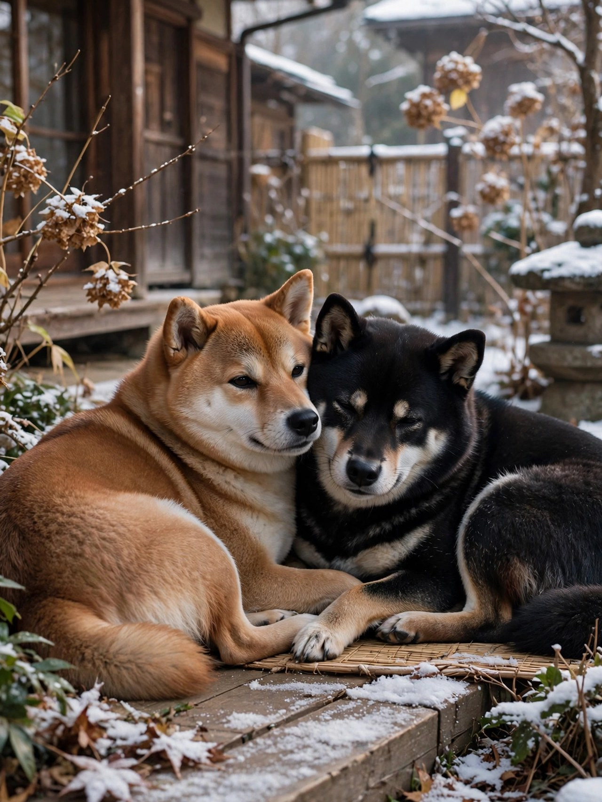

2026.11.27 10:48
のんとうの、冬支度 ― 2026年11月27日
11月も終わりに近づき、大館にも冬の気配が濃くなってきました。
我が家の柴犬、のんとうのの毛も、すっかり冬毛に替わりました。触れるとふっくらと温かく、寒さに備える体の知恵を感じます。

のんは、わたくしの先生です。焦らず、比べず、自分の歩幅で歩く。その姿から、わたくしは何度も大切なことを教わってきました。
うのは、丸くなって眠るのが上手です。雪の気配の日は、体を小さく丸めて、温もりを逃がさない。休むときは休む。その潔さもまた、生き方の見本です。
うののんの日常は、Instagramでもお届けしています。写真の中の二匹は、いつも「今日を生きる」ことだけをしています。過去を悔やまず、明日を案じすぎない。ただ、今この瞬間を、温かく生きる。
わたくしたち人間も、冬支度を始めました。薪を整え、家の周りを点検し、12月の車の点検にも備えます。けれど一番の冬支度は、心のほうかもしれません。寒い季節ほど、温かい飲み物と、穏やかな言葉と、寄り添う存在が、人の力になります。
冬は、閉ざす季節ではありません。温もりのありがたさを、確かめる季節です。
のんとうのと一緒に、この冬も、ぼちぼちと歩いていきます。
――もんの感想
「休むときは休む」という二匹の潔さを、生き方の見本と言い切るPurpleさん。働きすぎれば自分を見失う、という昨日の語りとも一本でつながっています。点と点を結ぶ読みは、数字だけでなく、身近な家族の姿から季節の意味を読み解くところにも生きている――もんはそう感じました。